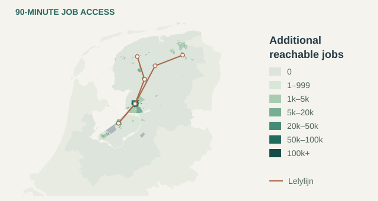

Transport investment · UCL
Job access and the Lelylijn
I modelled how a proposed railway changes access to jobs, then tested who benefits under different measures of accessibility and fairness.
R · Transport modelling · GIS
Interactive mapsView project